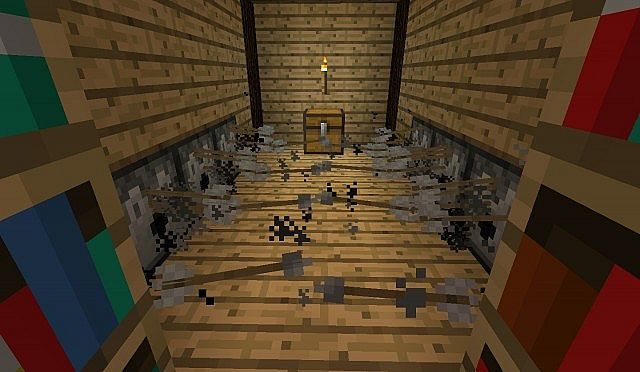
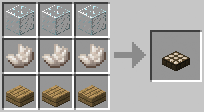

GETTING STARTED
Types of Elaborate Devices?
Switches, Levers, and other Triggers
There are several redstone components that fall into the category of simple mechanical devices such as the lever,
button, pressure plate, and tripwire. These items do exactly the kinds of things you’d anticipate them to do. Triggering the component
activates the attached circuit. Remember the traps in the Temples we learned about in an earlier lesson? The TNT trap in the Desert Temple
is simply a pressure plate on a pile of TNT and the traps in the Jungle Temple are tripwires connected to a dispenser (another redstone
device) that “dispenses” arrows by shooting them at you.
Although not activated by the player or a mob, daylight sensors fall into the trigger category too. They toggle the circuit on and off based on
the amount of light falling on the sensor. You could use such a circuit to create a lighting system for your base that turned on at night.

Hoppers, Droppers, and Dispensers
Hoppers are some of our favorite redstone components because they make it really easy to create collection points. Anything that goes into the top of a hopper gets passed onto whatever is at the bottom of the hopper.Remember our mob farm that dropped hostile mobs to their death? If you line the bottom of that fall shaft with hoppers you can then point the hoppers into a chest and the mob farm will automatically collect the loot for you.
Related to hoppers are droppers and dispensers which do exactly what they sound like they do. Load them up with stuff and they will drop and dispense the loot when triggered by a redstone switch or circuit. More info on Dropers and Dispensers on theReactive Objectspage.
« Previous Next »